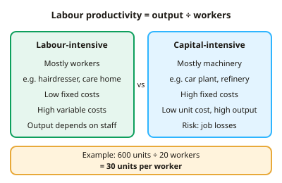

GCSE Economics · Topic 4
Production, Costs, Revenue and Profit
This topic is about how firms produce goods, what it costs them, and whether they make a profit.
We will look at productivity and production methods, then calculate fixed, variable, total and average costs.
Then we calculate revenue, profit and break even, and see how economies and diseconomies of scale affect costs as firms grow.
- 4 subtopics
- 160 questions
- Free: 4.1 notes and 10 questions
In this topic
- 4.1Production and productivity: labour-intensive and capital-intensive methodsFree below · 37 questions
- 4.2Fixed, variable, total and average costs: calculationsOpen in Full Marks · 43 questions
- 4.3Revenue, profit and loss, and break-even: calculations and interpretationOpen in Full Marks · 50 questions
- 4.4Economies and diseconomies of scaleOpen in Full Marks · 30 questions
4.1 · Free notes
Production and productivity: labour-intensive and capital-intensive methods

Key points
- Production is the process of turning inputs (the factors of production: land, labour, capital and enterprise) into outputs of goods and services.
- Productivity measures output per unit of input. It is not the same as production, which is total output.
- Labour productivity = total output ÷ number of workers (or hours worked). For example, 600 units ÷ 20 workers = 30 units per worker.
- Higher output does not mean higher productivity. If a firm doubles its workers and doubles its output, productivity is unchanged.
- Labour-intensive production uses a high proportion of labour relative to capital, e.g. hairdressing, care homes, tutoring and bespoke tailoring. Output is limited by staff numbers and wage costs make up much of the total cost.
- Capital-intensive production uses a high proportion of capital (machinery, robots, technology) relative to labour, e.g. car manufacturing, oil refining and automated warehouses. It has high fixed costs but can give low average costs at high output.
- A firm's choice of method depends on the relative cost of labour and capital, the type of product (bespoke or mass-produced), the size of the market and the finance available. If wages rise, firms tend to substitute machines for workers.
- Ways to raise productivity: training, investment in capital and technology, better management, division of labour and better motivation.
- Division of labour means each worker specialises in one task. It raises output per worker and skill, but work can become repetitive, which lowers motivation and makes the firm dependent on every stage.
- Higher productivity lowers average (unit) costs, improves competitiveness, and can support higher wages, profits and economic growth.
- Capital-intensive methods can cause structural unemployment among low-skilled workers, and machines need maintenance and large start-up finance.
In more detail
- Worked productivity change: a factory makes 600 units with 20 workers (30 each). After training, the same 20 workers make 700 units, so productivity rises to 35 units per worker.
- Choosing a method: where wages are high, car makers use robots (capital-intensive); where wages are low, clothing is often sewn by hand (labour-intensive).
- UK productivity puzzle: UK labour productivity has grown much more slowly since the 2008 financial crisis than before it, a long-running concern for economists.
- Exam tip: productivity is output per input, not total output, so always divide.
Practice
Production and productivity: labour-intensive and capital-intensive methods: 10 questions
Pick an answer to check it, or open the answer for the explanation.
1. A factory produces 500 units a week using 25 workers. What is its labour productivity?
- 20 units per worker
- 525 units per worker
- 12,500 units per worker
- 125 units per worker
Show answer
A: 20 units per worker. Labour productivity = output ÷ number of workers = 500 ÷ 25 = 20 units per worker.
2. Which business is most likely to be capital-intensive?
- A hairdressing salon
- A car assembly plant using robots
- A residential care home
- A private tutoring service
Show answer
B: A car assembly plant using robots. Car assembly uses a high proportion of machinery and robots relative to labour. The others rely mainly on skilled people.
3. What does productivity measure?
- Revenue minus costs
- Output per unit of input, such as per worker
- The number of workers a firm employs
- Total output produced by a firm
Show answer
B: Output per unit of input, such as per worker. Productivity is output per unit of input, e.g. per worker or per hour. Total output is production, not productivity.
4. A firm's output rises from 400 to 480 units with the same 20 workers. By what percentage has labour productivity risen?
- 20%
- 80%
- 16.7%
- 4%
Show answer
A: 20%. Productivity rises from 400÷20 = 20 to 480÷20 = 24 units per worker. The increase is 4 ÷ 20 × 100 = 20%.
5. A firm doubles its workforce from 10 to 20 and its output rises from 200 to 400 units. What happens to labour productivity?
- It doubles
- It halves
- It is unchanged
- It falls
Show answer
C: It is unchanged. Productivity was 200 ÷ 10 = 20 and is now 400 ÷ 20 = 20 units per worker. Output doubled, but productivity did not.
6. What is a major disadvantage of capital-intensive production?
- Average costs are always higher
- High fixed costs and expensive set-up
- Output can never be large
- It cannot raise productivity
Show answer
B: High fixed costs and expensive set-up. Machinery requires large investment and maintenance, giving high fixed costs. It often gives lower unit costs at high output.
7. Wages rise sharply while machinery prices stay the same. What will a profit-seeking firm most likely do?
- Substitute machines for workers
- Employ more labour-intensive methods
- Cut the quality of its product
- Stop all production immediately
Show answer
A: Substitute machines for workers. Labour is now relatively more expensive, so firms switch towards capital-intensive methods to keep costs down.
8. Which is a drawback of the division of labour?
- Workers become more skilled
- Repetitive tasks can reduce motivation and quality
- Output per worker usually falls
- Training is never needed
Show answer
B: Repetitive tasks can reduce motivation and quality. Doing one narrow task repeatedly can cause boredom, lowering motivation and quality. Specialisation normally raises output per worker.
9. How can higher productivity benefit a firm?
- It forces the firm to raise prices
- It lowers average cost per unit, improving competitiveness
- It raises the firm's fixed costs
- It reduces output from the same inputs
Show answer
B: It lowers average cost per unit, improving competitiveness. More output from the same inputs spreads costs over more units, cutting average cost and allowing lower prices or higher profit.
10. Firm A makes 3,000 units with 50 workers. Firm B makes 2,400 units with 30 workers. Which statement is correct?
- Firm A is more productive because it makes more
- Both firms are equally productive
- Firm A makes 60 per worker and Firm B 40
- Firm B is more productive: 80 per worker against 60
Show answer
D: Firm B is more productive: 80 per worker against 60. A: 3,000 ÷ 50 = 60. B: 2,400 ÷ 30 = 80. Productivity compares output per worker, not total output.
Keep going in Full Marks
Full Marks has 37 questions on Production and productivity: labour-intensive and capital-intensive methods (27 more than here), set out in practice levels. You also get notes and 3D models for all 4 subtopics of Production, Costs, Revenue and Profit, plus games, timed exams and past papers.